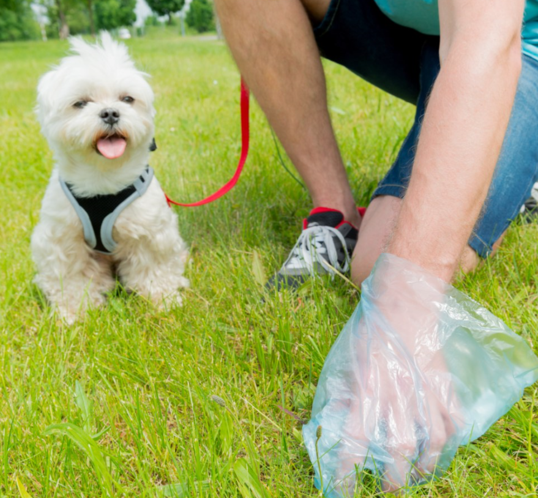

|
[생활/기타] 반려견 안전 관리 대책 등록일:2023.05.09

안녕하세요. 오울훈련사 오세울입니다.
어제 수업이 끝나고 휴대폰을 확인해보니 10통이 넘는 부재중 전화가 들어와 있었습니다.
번호도 각기 달라서 한 사람이 급하게 전화한 것 같지는 않은데…. 뭐지? 라는 생각으로 전화를 걸어봤습니다.
어제 반려견 안전 관리 대책 관련한 보도가 나갔다고 합니다.
관련 기사들을 보니, 오는 3월 22일부터 체고 높이 40cm 이상의 반려견은 관리 대상견이 되고 입마개를 해야 한다는 이야기와 줄도 2m로 축소해야 한다는 거였습니다.
기사들도 많고, 정확히 알아봐야 할 것 같아서 농림축산부 반려견 안전 관리 대책 담당과에 연락을 해봤습니다.
우선, 지금까지 정해진 것은 이것입니다.
오는 3.22일부터 범칙금 적용 : 목줄 미착용 / 대변 미처리 / 맹견 5 견종 입마개 미착용
지금 기사에 나오고 있는 체고 높이 40cm 이상의 반려견 입마개를 착용해야 한다는 것은 2021년 반려견평가시험을 하는데, 평가에 통과하지 못한 체고 높이 40cm 이상의 반려견
에게 적용될 거라고는 하지만, 미확정이라고 합니다. 누구 평가를 할 것인지? 어디서 할 것인지? 줄 길이는 내년부터 시행될 거라고 기사에 나왔지만, 확정된 것이 아니라 여러 전문
가와 논의하여 결정될 거라고 합니다.
확정되고 시행되는 것은 위와 같은 목줄 미착용과 대변을 수거하지 않는 것 그리고 맹견 5 견종의 대한 입마개 미착용입니다.
관계자들과 이야기를 해보면, 위에 3가지 이외에는 모두 정확하지 않다고 합니다. 앞으로 얼마든지 전문가들과 상의하여 법안을 만들어가겠다고 하네요.
사실 전에 농림축산부에서 연락이 왔습니다. 이런 회의를 하는데 나와달라는 거였는데, 당장 내일 3시까지 세종시로 오라고 해서 갈 수 없었습니다. 1차 회의는
못 가서 2차 회의는 미리 알려달라고 했지만, 똑같이 연락이 와서 내일 3시까지 세종시로 오라고 해서 2차 회의에도 갈 수 없었습니다.
어떤 전문가들이 모였을까? 생각해보면, 아마 정말 현장에서 일하고 있는 분들은 아닐 것 같은 생각이 듭니다.
오늘 담당자와 통화를 해보니, 그 담당자가 나에게 내일 당장 올 수 있느냐고 물어봤던 분이셨고 여러 이야기를 했지만, 소득은 없어 보입니다. 다음에는 부디 일주일 전 만이라도
연락을 주셔서 저도 참가할 수 있었으면 좋겠습니다.
여러분 아직 입마개는 줄 길이 제한이 법적으로 시행된 것이 아닙니다~
위에 3가지는 당연히 지켜야하는 것이라 생각됩니다.
제가 항상 마음에 담고 있는 말이 있습니다.
`모든 문제는 풀 수 있다`
하나씩 풀어나가다 보면, 좋은 정책과 규칙들이 만들어져 나갈 겁니다.
오울과 저도 노력하겠습니다. |